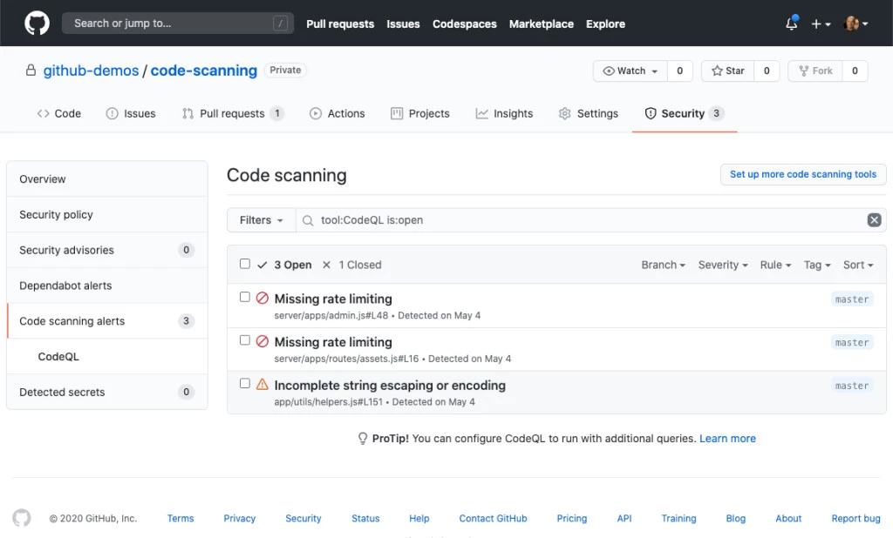

No podemos crear una nueva rama partida de la main sin tener ningún commit,
aun así vamos a intentarlo para ver que pasa, vamos a crear un archivo readme.md pero no vamos a
hacer no vamos a comitearlo y vamos a intentar hacer una rama para ver que nos sale

Como vemos nos sale que no es valido y cuando hacemos un branch para ver las ramas que tenemos nos sale vacío
esto es debido a que la rama main se crea después de hacer el primer commit
Aquí podemos ver que ahora si esta la rama main
Ahora crearemos una nueva rama para trabajar en ella
-git branch "nombre"
Crearemos una segunda y añadiremos archivos

Uniremos la rama dev a la rama main
Antes usaremos el git checkout para ir a la rama main
Ahora escribiremos git merge y el nombre de la rama que queremos traer
Si hacemos un git log podremos ver que comparten los commits

Listo, ya tenemos actualizada la rama main
Es igual para mergear cualquier otra rama,
en la rama main no debemos trabajar
Resolución de conflictos en un merge
Para ponernos en contexto, primero debemos saber que es un "merge". Ya sabemos que en un proyecto suelen trabajar varias personas, y concretamente con git, cada persona suele trabajar en su propia rama, pero varias personas pueden estar trabajando con un archivo en concrecto en sus respecticas ramas. Entonces... ¿qué pasa cuando queremos unir nuestras ramas?
pues bien, el momento en el que fusionamos las ramas se llama "merge". Y si hay archivos que estan en diferentes ramas y modificados de diferente manera en la misma linea de códgio, ,al querer hacer una fusión o "merge" va a acabar en una serie de conflictos ya que en la misma linea de código, habrán cosas diferentes.
a cotinuación vamos a mostrar los pasos para resolver estos conflictos:
1. Nos metemos a la terminal Git
2. Nos dirigimos al repositorio, que esta dando el conflicto de fusión
3. En mi caso he creados dos Ramas una se llama StarPlatinum y la otra Dio
StarPlatinum
Dio

Fase cuatro intentar que tengan conflicto con los Stands.

Ahora probaremos con el merge si Dio y Jotaro pueden convivir

Abrimos el txt para ver que falla y vemos que Stand es

Para arreglar este conflicto debemos, o borrar la linea de StarPlatinum, borrar la Dio o tambien que es lo que he hecho, combinar StarPlatinum con Dio. Quedara asi

Actualizamos el archivo y hacemos un commit con un mensaje significativo. <3

Asi hemos arreglado el conflicto del merge y ahora Jotaro no pelea con Dio porque Gano Dio
Diferencias entre un pull y un fetch.
1. Debemos saber que tanto pull como fetch se utilizan para actualizar la copia local de un repositorio remoto
Tabla de pull y fetch
| Característica | git fetch | git pull |
|---|---|---|
| Descarga cambios | Sí | Sí |
| Fusiona cambios | No | Sí |
| Puede causar conflictos | No | Sí |
| Uso recomendado | Si desea ver los cambios remotos sin fusionarlos | Si desea fusionar los cambios remotos con su rama actual |
¿Cómo podríamos volver a una versión anterior del proyecto?
Para esto, necesitariamos tener un archivo anteriormente creado y con al menos dos commits.
Podemos recuperar el archivo (prueba.txt en los ejemplos siguientes) al estado en el que estaba antes de la modificación, es decir al estado en el que estaba en el último «commit» para eso utiliza el comando git checkout al último commit conocido que en este caso está en HEAD:
git checkout Prueba1(HEAD) Parte3

Pero si esa versión no es buena, o si quieres volver el archivo en cuestión no a esa versión si no a una anterior en el tiempo, primero deberemos comprobar en el registro log de ese directorio de git los «commits» realizados para poder escoger a la versión que deseamos. Echamos un vistazo a los logs con este comando:
git log --oneline
Lo que nos dará una salida «algo» similar a esta (con las lógicas diferencias de «commits», etc…)
4c8bde5 primer commit
59ff307 para volver a la anterior version
5ee9c18 segundo commit
6477aec Primer commit del proyecto.
Imaginemos que queremos devolver el archivo Parte3 a la versión como estaba en nuestro primer commit del proyecto. Para ello escribiremos el siguiente comando
git checkout 59ff307 Parte3
Ahora la versión antigua del archivo ha sido restaurada en el directorio de trabajoadir el archivo y volver a hacer un «commit» ya que el archivó cambió.
Puedes comprobar el estado del directorio de trabajo mediante el comando git status.
No olvides que una vez restaurado el archivo, es necesario volver a añadir el archivo y volver a hacer un «commit» ya que el archivó cambió.
git add Parte3
git commit -m "restaurar prueba.txt al estado del primer commit.""
Comprobemos en el log de Git que efectivamente todo ha ido como queríamos:
git log --oneline

nos saldra algo así:
6536889 restaurar Parte3 al estado del primer commit.
4c8bde5 commit prueba
5ee9c18 segundo commit
6477aec Primer commit del proyecto.
También podemos llevar no sólo un archivo a un punto predeterminado, si no todos los archivos del repositorio, para ello escribimos:
git checkout 6477aec
Al hacer esto, tu repositorio va atrás en el tiempo por completo, así que si ahora empiezas a trabajar sobre él podrías destruir tu futuro trabajo. Por defecto Git asume que no es eso lo que quieres hacer, así que separa donde se desarrolla el trabajo HEAD del proyecto y te deja empezar a trabajar.
¿Podemos añadir seguridad de alguna forma a nuestro repositorio remoto?
Si, hay varias maneras de proteger tu repositorio remoto y todo su contenido.
1.Claves SSH: Si estás utilizando la autentización SSH, le puedes poner una contraseña a tu clave SSH.
2.Autentificación de Dos Factotes(2FA): Se tiene que agregar desde donde tienes tu repositorio. Esto lo que hace es que una vez ingreses tu contraseña, te pide un segundo método de reconocimiento al ingresar a tu cuenta.
3.Permisos y colaboradores: Tienes que ajustar los permisos de tu repositorio para que solo las personas que quieras tengan permisos de escritura y lectura.

4.Auditoria y registros: Puedes revisar los registros de las actividades de cada usuario y así ver si a habido algun cambio raro.
5.Analisis de dependencias: Una de las partes más importantes es mantener las bibliotecas actualizadas. También puedes hacer análisis de seguridad para ver posibles vulnerabilidades.
6.Escaneo de código: Puedes utilizar el análisis de código estático para ver vulnerabilidades en la estructura del código.
7.Politicas de contribución: Establece y comunica las políticas de contribución de tu proyecto. Esto garantiza que los colaboradores sigan estas políticas para mantener la integridad y seguridad del código.

8.Actualizaciones de seguridad: Manten lo todo actualizado siempre que haya una actualización de seguridad de las herramientas y bibliotecas.